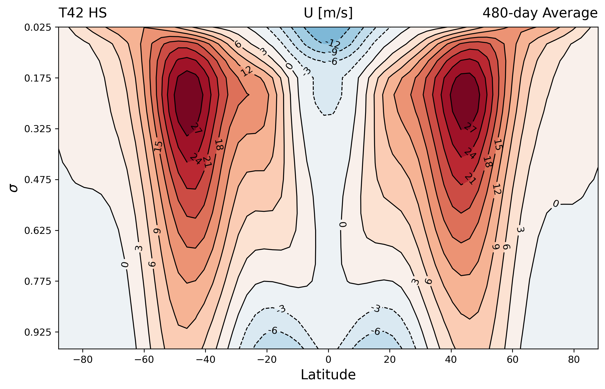

idealized-spectral-gcm
idealized-spectral-gcm is a lightweight global atmospheric model written in Julia. It provides a spectral-transform dynamical core for idealized research, teaching, benchmark experiments, and numerical-method development.
The package supports three equation sets:
- a hydrostatic primitive-equation atmosphere with optional moisture;
- a rotating shallow-water model;
- a nondivergent barotropic vorticity model.
The primitive-equation model combines spherical-harmonic horizontal dynamics, Simmons–Burridge pressure-coordinate differencing, semi-implicit filtered leapfrog integration, finite-volume moisture transport, and a compact suite of idealized physical parameterizations.

Documentation map
If this is your first run, begin with Getting started. The remaining pages separate scientific explanation from user-facing configuration and output reference:
- Dynamical core describes the equation sets, spectral transforms, vertical discretization, tracer transport, semi-implicit solve, damping, and conservation corrections.
- Physical parameterizations describes only the parameterized processes and their ordered coupling.
- Model configuration lists
Model_Config, initialization choices, constraints, and physics dictionary keys. - Output and restarts documents time averaging, NetCDF variables, pressure-level interpolation, checkpointing, and warm starts.
- Notation is the single source of truth for mathematical symbols and their source-code names.
Design boundary
The model deliberately separates resolved dynamics from parameterized physics. The dynamical core constructs an adiabatic provisional next state. Enabled parameterizations then act sequentially on a Gaussian-grid working state and the result is synchronized back to the spectral representation. This avoids mixing physical increments into the three-level leapfrog tendency and makes the order of parameterized processes explicit.
Current scope
The code is intended for idealized configurations rather than operational forecasting. Implemented primitive-equation parameterizations include Held–Suarez forcing, Betts–Miller convection, large-scale condensation, surface sensible and latent exchange, implicit boundary-layer scalar mixing, and a prescribed moisture-radiative linear response. It does not currently include interactive radiation, cloud microphysics with condensate storage, or a full land/ocean surface model.
The project is a modern refactor of the legacy spectral core originally developed by Daniel Zhengyu Huang.